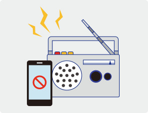
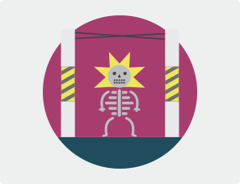
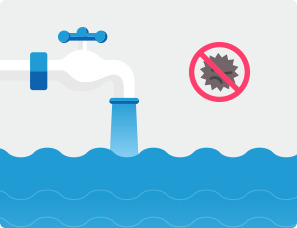

태풍
우리나라는 매년 여름철 태풍이 발생하여 큰 피해를 주고 있습니다. 또한 태풍은 집중호우를 동반아여 피해를 가중시키고 있습니다.
태풍 예보 및 경보 발효 시 자신이 있는 장소에 따라서 행동해야 하는 방법을 알려드립니다.
태풍 발생 전 이렇게 대비합니다.
- 내 지역의 정보는 미리미리 확인합니다.
- 내가 거주하거나 생활하는 지역의 홍수, 태풍, 침수(저지대), 산사태, 해일 등 재해위험요소를 사전에 확인합니다.
- 재난에 대한 위험정보를 수신할 수 있도록 준비합니다.
- 태풍, 집중호우 등 기상특보나 홍수, 산사태 등 재난 예·경보를 수신할 수 있도록 TV,
라디오 청취등 가능하도록
하고 스마트폰 앱(안전디딤돌) 등을 미리 설치합니다.
- 가족과 사전에 비상에 대비한 약속을 정합니다.
- 비상시를 대비하여 지역에 대피할 장소(국민재난안전포털, www.safekorea.go.kr이나
지자체 홈페이지의
임시대피소, 이재민 임시주거시설등 참고)와 안전한 이동방법에 대해
숙지하고, 어린이들에게 알려주어야
합니다.
- 가족이 각각 이동할 때를 대비하여 다시 만날 장소를 사전에 정합니다.
- 비상시 안전한 이동밥법, 대피요령 등을 숙지해 둡시다.
- 비상상황이 예견될 때에는 가족과 즉시 연락해서 함께 안전한 곳으로 이동할 수 있도록 하고,
상황이 급박할 경우에는 즉시 그 자리를 피하고 가족과는 따로 연락해서 자신의 이동경로를 알려주도록 합니다.
- 피난길에는 하천변, 산길 등 위험한 지름길은 피하고, 도로나 교랑이 휩쓸려간 길은 지나지 않도록 합니다.
- 이동 길에 전신주나 변압기 등의 주변은 피하도록 합니다.
- 재난이 발생할 경우를 대비하여 비상용품을 사전에 준비합니다.
- 응급약품, 손전등, 식수, 비상식량, 라디오, 핸드폰충전기, 휴대용 버너, 담요등 비상용품을 사전에 한 곳에
구비해 두고 응급한 상황이 발생하면 바로 휴대할 수 있도록 준비합니다.
- 차량이 있는 경우에는 차량의 연료를 미리 채워 둡니다. 차량이 없을 경우 차량에 있는
가까운 지인과 사전에 같이
이동할 수 있도록 약속해 둡니다.
- 재난에 대비한 지속적인 관심과 정비를 합니다.
- 비상용품의 유효기간을 지속적으로 확인하여 교체하고, 대피장소,이동경로등에 대해서는 지속적으로
관심을 가지고 정비합니다.
태풍·호우 예보 시 이렇게 행동합니다.


- 태풍이나 호우의 진로 및 도달시간을 파악합니다.
- TV, 라디오, 인터넷, 스마트폰 등으로 기상상황을 미리 파악하여 대비합니다.
- 스마트폰 '안전디딤돌' 어플리케이션을 통해 기상상황을 파악합니다.
- 산간·계곡·하천·방파제 등 위험지역에서는 안전한 곳으로 이동합니다.
- 산간·계곡·하천·방파제 등에서 야영이나 물놀이를 멈추고 안전한 곳으로 대피합니다.
- 저지대나 상습침수지역, 산사태 위험지역, 지하공간이나 붕괴우려가 있는
노후주택·건물의 주민은
안전한 곳으로 이동 준비를 합니다.
- 주택이나 차량 등 재산보호를 위해 사전에 대비합니다.
- 바람에 날아갈 위험이 있는 지붕, 간판 등은 사전에 결박하고, 창문은 창틀에 단단하게 테이프 등으로
단단히 고정합니다.
- 하천이나 해변, 저지대에 주차된 차량은 안전한 곳으로 이동합니다.
- 가정의 하수구나 집 주변의 배수구를 미리 점검하고 막힌 곳은 뚫어야 합니다.
- 모래 주머니, 방수판 등을 이용하여 침수가 예상되는 아파트 지하주차장, 건물이나 농경지는 기상 특보가
발령되기 전까지 정비합니다.
- 시설하우스 등 농업시설물은 버팀목이나 비닐끈 등으로 견고히 묶어 피해를 예방합니다.
- 선박이나 어망·어구 등은 사전에 결박하여 피해를 최소화하도록 합니다.
- 공사장, 비탈면이 있는 지역은 안전 상태를 미리 확인합니다.
- 비상용품 준비 등 재난발생에 대비합니다.
- 비상시 신속히 응급용품을 가지고 이동 대피할 수 있도록 사전에 배낭 등에 모아둡니다.
- 상수도 공급 중단의 상황이 발생될 수 있으므로, 욕실 등에 미리 물을 받아둡니다.
- 정전에 대비하여 비상용 랜턴, 양초, 배터리 등을 구비해 둡니다.
- 긴급 상황 정보수신을 위해 스마트폰에 안전디딤돌 앱을 설치하고, 가까운 동사무소 등과의 긴급 연락망을
확인합니다.
- 약속, 일정 등을 조정합니다.
- 태풍, 호우가 예보된 날은 일정을 조정하고, 외출은 자제합니다.
태풍·호우 특보 중 이렇게 행동합니다.

- 나와 가족, 지인들의 안전을 위해 외출을 자제하고 지속 정보를 청취합니다.
- 태풍·호우 시에는 외출을 자제하고, TV, 라디오 등을 통해 기상정보를 청취하여 내가 있는 지역의 상황을 지속
관찰합니다.
- 외부에 있는 가족, 지인과 연락하여 안전확인과 위험정보 등을 공유합니다.
- 차량으로 이동 중에는 속도를 줄여서 운전하고, 개울가, 하천변, 해안가, 지하차도 등 급류에 휩쓸릴 수 있거나
침수위험지역은 접근하지 않습니다.
- 산간·계곡·하천·방파제 등 위험지역에서는 안전한 곳으로 이동합니다.
- 산간·계곡·하천·방파제 등에서 야영이나 물놀이를 멈추고 안전한 곳으로 대피합니다.
- 저지대나 상습침수지역, 산사태 위험지역, 지하공간이나 붕괴우려가 있는
노후주택·건물의 주민은
안전한 곳으로 이동 준비를 합니다.
- 건물, 집안 등 실내에서의 안전수칙을 숙지합니다.
- 건물의 출입문, 창문은 닫아서 파손되지 않도록 하고, 실내에서는 창문이나 유리문에서 되도록
떨어져 있도록 합니다.
- 침수의 위험이 없는 지역에서는 바람으로 인해 피해를 입지 않도록 가급적 욕실과 같이 창문이 없는 방이나
집안의 제일 안쪽으로 이동합니다.
- 가스 누출로 2차 피해가 발생할 수 있으므로 사전에 차단하고, 감전의 위험이 있으므로 집 안팎의 전기시설은
만지지 않습니다.
- 정전 시에는 양초를 사용하지 말고 휴대용 랜턴을 사용합니다.
- 위험지역은 접근하지 말고, 즉시 안전한 지역으로 대피합니다.
- 태풍·호우 특보가 발효된 지역의 해안가, 상습침수지역, 산간·계곡 등 위험지역에 있거나 대피권고를 받을 경우
즉시 안전한 지역으로 대피합니다.
- 공사장, 가로등, 신호등, 전신주, 지하공간 등 위험지역에는 접근하지 않습니다.
- 태풍·호우 시에는 개울, 하천변, 해안가에 접근하지 말고, 농촌지역에서도 논둑이나 물꼬를 보러 나가지 않습니다.
- 이동식 가옥이나 가시설, 지하실 등에 거주할 경우에는 단단한 건물로 즉시 이동합니다.
- 선박은 사전에 항구에 결박하고, 운행 중인 경우 태풍의 이동경로에서 최대한 멀리 대피합니다.
태풍·호우 발생 후 이렇게 행동합니다.

- 가족 지인의 안전 여부를 확인합니다.
- 가족 및 지인과 연락하여 안전여부를 확인하고, 연락이 되지 않고 실종이 의심되는 경우에는 가까운 경찰서에
신고합시다.
- 태풍, 호우로 인한 피해여부를 확인합니다.
- 대피 후 집으로 돌아온 경우에는 노후주택 등은 안전에 위험이 있을 수 있으므로, 출입하기 전에 반드시
피해여부를 확인합니다.
- 파손된 시설물 (주택,상하수도,축대,도로 등) 이 있을 경우에는 가까운 동사무소나 시군구청에 신고합니다.
- 파손된 사유시설을 보수·복구할 때에는 반드시 사진을 찍어 둡니다.
- 침수된 도로, 교량, 보도 등은 파손되었을 수 있으므로 건너지 않습니다.
- 하천 등 제방은 무너질 수 있으니 가까이 가지 않습니다.
- 고립된 지역에 있을 경우에는 물가 등을 건너지 말고, 119 또는 112등에 신고하거나 주변에 도움을 요청합니다.
- 태풍, 호우로 인한 2차피해를 방지합니다.
- 물이 빠져나가고 있을 때에는 기름이나 동물사체 등 오염된 경우가 많으므로 물에서 멀리 떨어집니다.
- 수돗물이나 저장 식수는 오염여부를 확인 후에 사용합니다.
- 침수된 음식이나 재료는 식중독의 위험이 있으므로 사용하지 않습니다.
- 침수된 주택은 가스, 전기차단기가 내려가 있는지 확인하고, 한국가스안전공사·한국전기안전공사(1588-7500)
또는 전문가의 안전점검 후에 사용합니다.
- 태풍·호우 피해로 가스가 누출될 수 있으므로 창문을 열어 충분히 환기하고, 성냥불이나 라이터는 환기 전까지
사용하지 않습니다.
- 쓰러진 농작물을 일으켜 세우고, 침수된 논·밭은 배수 시 작물에 묻은 흙앙금 ·오물 등을 깨끗한 물로 제거하고
병해충을 긴급 방제합니다.

 태풍 대비 국민 행동 요령(20초 스팟)
태풍 대비 국민 행동 요령(20초 스팟) 지진
지진
 태풍
태풍
 호우
호우
 강풍/풍랑
강풍/풍랑
 홍수
홍수
 대설
대설
 산불
산불
 산사태
산사태
 폭염
폭염
 가뭄
가뭄